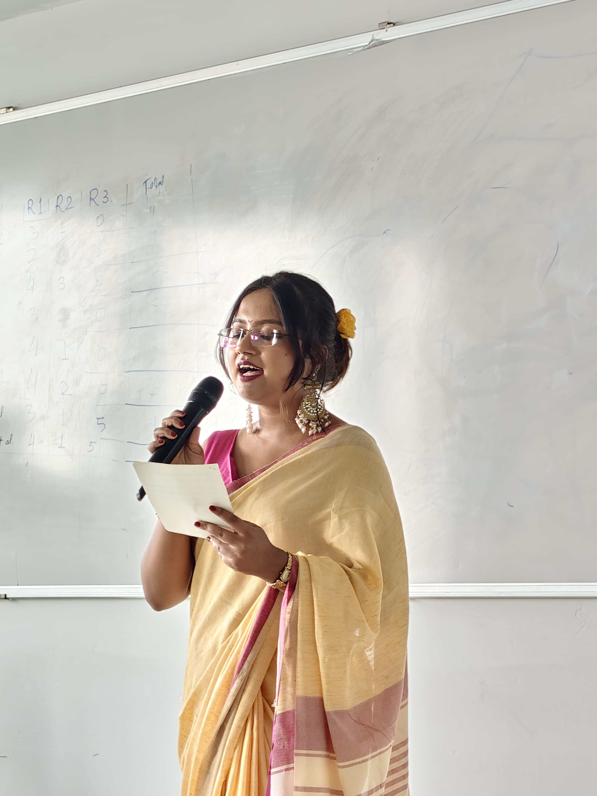
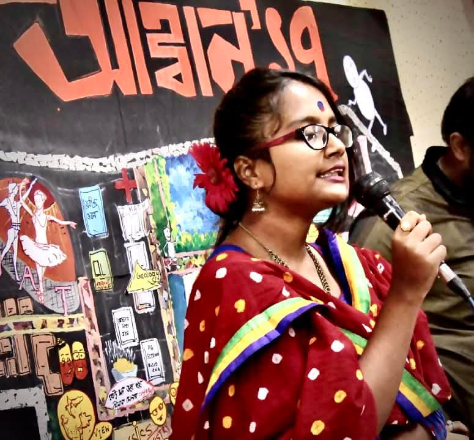
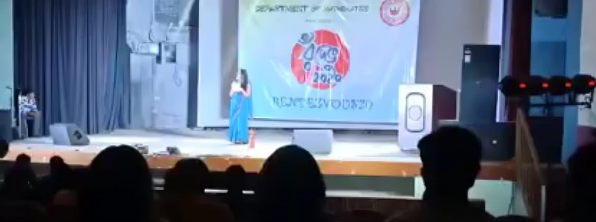
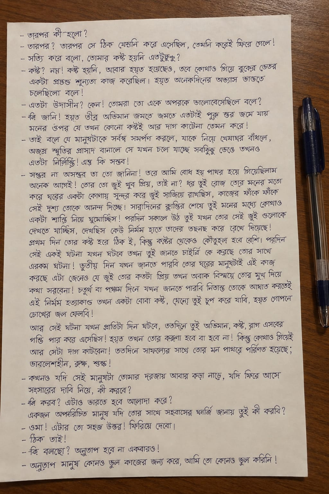
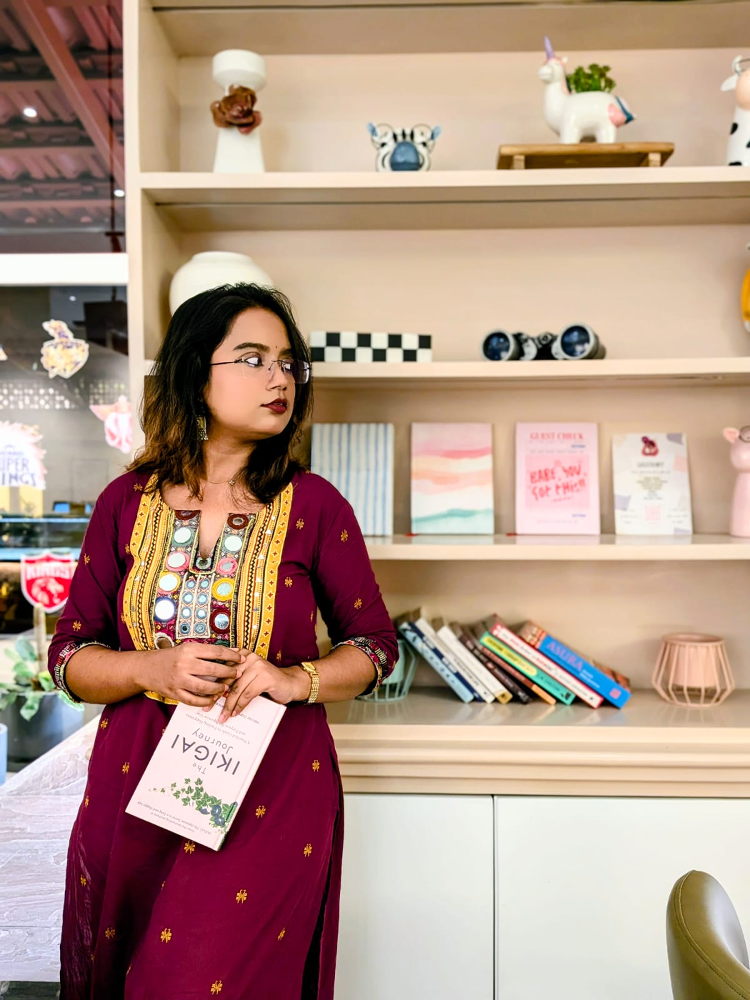
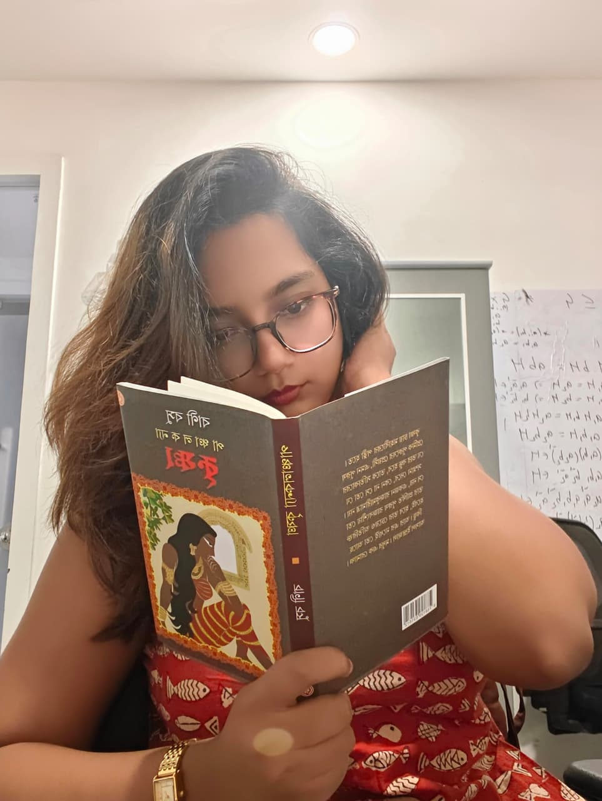
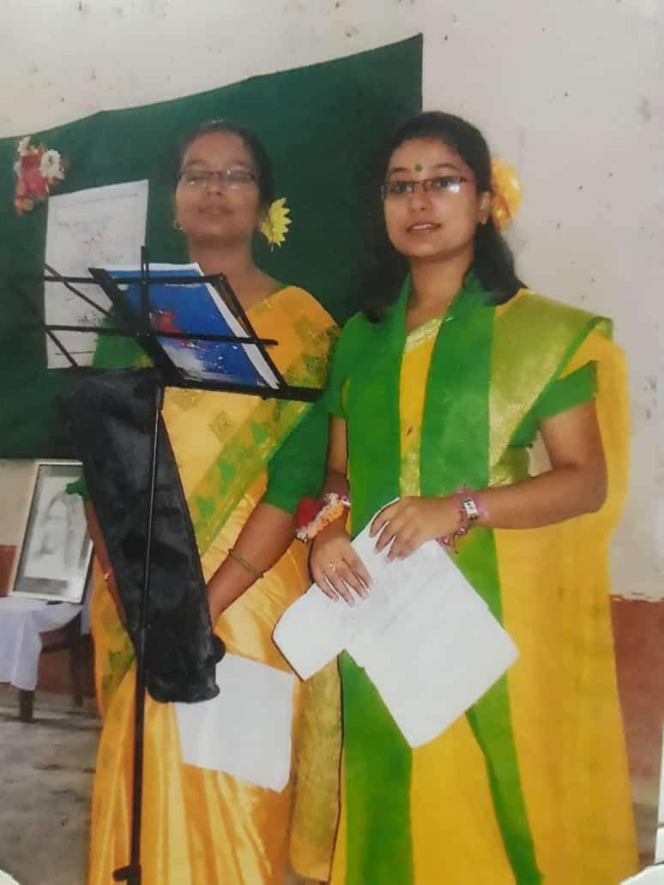
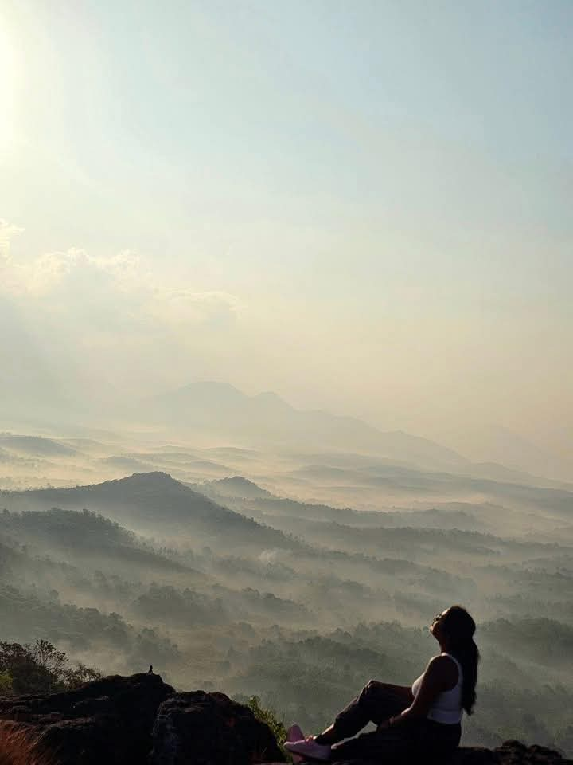

Beyond Mathematics
A little of life outside mathematics.
Mathematics occupies a large part of my life, but it is far from being the only thing that defines me. Music, recitation, books, writing, debate and public speaking have accompanied me since childhood and continue to remain an important part of who I am.
My mother introduced me to music when I was very young. The first musical instrument I ever played was the harmonium, which I received at the age of four. I began professional musical training at the age of six.
For almost ten years, I trained in both Hindustani Classical Music and Rabindrasangeet. Music has remained one of the most enduring parts of my life, and I still love listening to and learning music whenever I can.
Over the years, I have participated in and won several district- and state-level music competitions. I also enjoy semi-classical and light music and have a particular interest in classical musical instruments.

My first stage performance was at the age of two and a half, when I participated in a local recitation competition. My parents noticed my natural inclination towards recitation and arranged professional training for me.
I quickly developed a deep love for performing. At the age of eight, I auditioned for All India Radio and was selected to perform as a child recitation artist. I subsequently recited at almost all of my school events and participated in numerous inter-school competitions.
I later received professional training under Bangiya Sangeet Parishad. The rigorous seven-year course led to the title of Visharad in Recitation.
Recitation continues to give me immense pleasure. For me, it is not simply performance; it is a way of bringing words, rhythm and emotion together.


As a single child, I naturally grew up around books. My curiosity about reading began with whatever I could find — newspapers, roadside posters, textbooks and, eventually, books of every kind.
Books have remained my best friends. When I feel low or overwhelmed, one of the easiest things for me to do is pick up a book and curl up on the couch. Reading has always been my comfort zone, and a book remains the easiest gift anyone can give me.
I also enjoy writing poetry and stories. I write primarily in Bengali, my mother tongue. When my mind is crowded with too many thoughts, writing them down is often the simplest medicine that works for me.



I have always enjoyed spontaneous debate because it feels like one of the rawest forms of public speaking. It gives you the opportunity to express the core of your thoughts without relying on carefully arranged facts or prepared quotations.
Debating has also helped me understand my own viewpoints better. I enjoy the process of thinking on my feet, listening to another perspective and discovering how clearly I can articulate what I genuinely think.
During school, I was the house captain of Laxmibai House, named after Rani of Jhansi. Our school followed a four-house system, and I regularly participated in inter-house debates.
Throughout my school years, I was also involved in organising events and anchoring cultural programmes. I still enjoy hosting events — public speaking gives me a way to connect with a larger audience and express ideas beyond the classroom.

There are many things that do not fit neatly into an academic CV but make life richer. I enjoy observing people — the way they speak, sit, interact and express themselves. This habit of observation is closely connected to my love for visualising stories, people and situations.
This space is intentionally open. It will gradually become a small visual collection of the people, places, books, performances and moments that make up life beyond research.

More photographs and stories will find their place here over time.